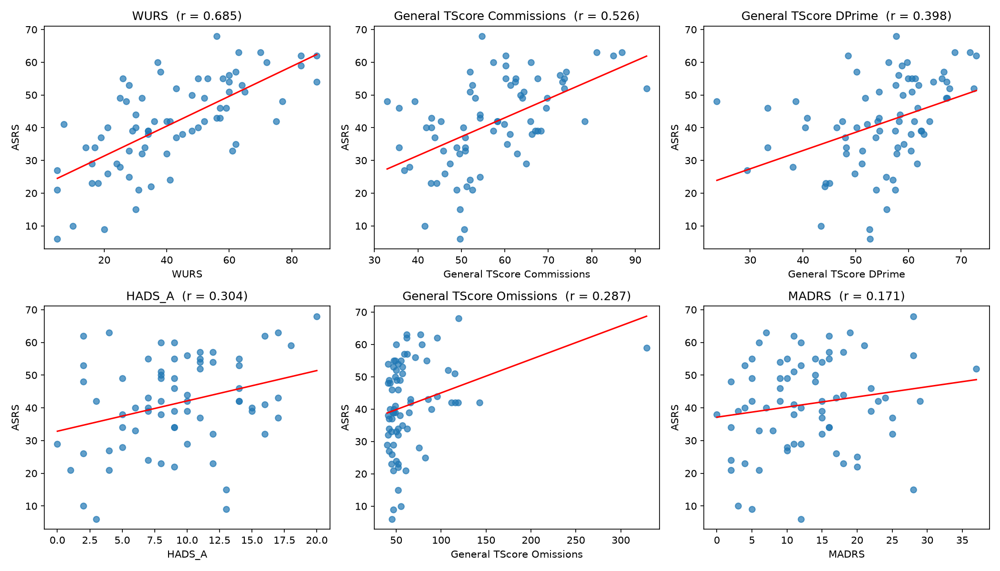
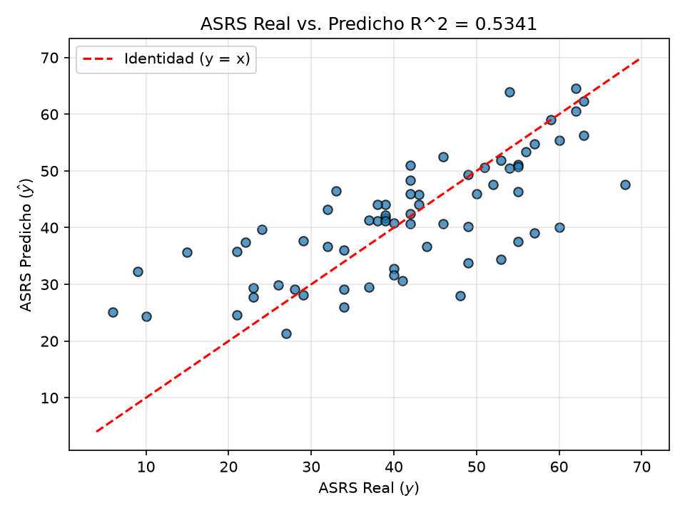

Severidad de síntomas de TDAH en adultos
¿Qué tanto se explica por los síntomas en la infancia, la impulsividad medida en una prueba y la ansiedad?
Mariana Salazar · Luis Alejandro Luna Martínez
Análisis de Regresión y Correlación · UABC · Dataset HYPERAKTIV (Hicks et al., 2021)
¿Por qué regresión lineal múltiple?
Corte transversal: cada paciente se evaluó una sola vez, no hay orden en el tiempo.
Más de 2 predictores · $n = 69 \ge 30$ · Durbin-Watson $= 2.174$
Comprensión→
Preparación→
Modelado→
Evaluación→
Pronósticos→
Comunicación
Metodología CRISP-ML(Q) · 4 notebooks, uno por etapa
Variables
| Variable | Qué mide | Escala |
|---|
| $Y$ | ASRS | Severidad actual de TDAH (autorreporte, OMS) | 0–72 |
| $X_1$ | WURS | Síntomas de TDAH en la infancia | 0–100 (corte ≥ 46) |
| $X_2$ | Commissions | Impulsividad en la prueba CPT-II | Puntaje T (> 60 elevado) |
| $X_3$ | HADS_A | Ansiedad | 0–21 (≥ 11 clínica) |
Excluimos ID, ADHD y ADD para evitar fuga de información
ASRS y sus correlaciones

| Variable | $r$ | $p$ |
|---|
| WURS | 0.685 | < 0.001 |
| Commissions | 0.526 | < 0.001 |
| DPrime | 0.398 | < 0.001 |
| HADS_A | 0.304 | 0.011 |
| MADRS | 0.171 | 0.154 |
| HADS_D | 0.112 | 0.361 |
| Edad | −0.116 | 0.320 |
$n = 75$ · Media 41.4 · Mediana 42 · Sin atípicos
Siempre hay que graficar

Omissions: un solo paciente (≈ 330) infla su $r$ · DPrime: $r = 0.88$ con Commissions
¿Cuánto pesa cada predictor?
Cambio en ASRS al aumentar una desviación estándar
Datos y multicolinealidad
3 archivos integrados por ID · regla CPT-II: Omissions < 300 · 75 pacientes → 69 casos completos
| Predictor | VIF |
|---|
| WURS | 1.623 |
| Commissions | 1.390 |
| HADS_A | 1.205 |
Todos < 2 (umbral < 5) · $\text{VIF}_j = \dfrac{1}{1 - R_j^2}$
El modelo estimado
$$\widehat{\text{ASRS}} = 7.635 + 0.368\,\text{WURS} + 0.308\,\text{Commissions} + 0.127\,\text{HADS\_A}$$
53.4 %
$R^2$ · ($R^2_{adj} = 0.513$)
24.84
$F(3,65)$, $p < 0.001$
Significativos: WURS ($p < 0.001$) y Commissions ($p = 0.010$) · No: HADS_A ($p = 0.655$) e intercepto ($p = 0.216$)
Ajuste y supuestos


Shapiro-Wilk $p = 0.263$ · Breusch-Pagan $p = 0.080$ · DW $= 2.17$ · Cook: 0 casos > 1
¿Transformar? No
| Modelo | RMSE (escala ASRS) | Shapiro-Wilk $p$ | Breusch-Pagan $p$ |
|---|
| Base lineal | 9.61 | 0.263 | 0.080 |
| $\ln(\text{ASRS})$ | 10.51 | < 0.001 | 0.027 |
| $\sqrt{\text{ASRS}}$ | 9.73 | 0.013 | 0.022 |
| Sin HADS_A | 9.63 | 0.283 | 0.041 |
Reversión: $\widehat{\text{ASRS}} = e^{\hat z + \hat\sigma^2/2}$ · $\widehat{\text{ASRS}} = \hat z^2 + \hat\sigma^2$
Pronósticos y conclusión

| Perfil | $\widehat{\text{ASRS}}$ | IP 95 % |
|---|
| Baja (P10) | 27.1 | [6.8, 47.5] |
| Moderada (P50) | 40.3 | [20.4, 60.2] |
| Alta (P90) | 56.1 | [35.7, 72.0] |
Útil para cribado, pero con ±20 puntos por paciente no sustituye la evaluación clínica.
Gracias
¿Preguntas?
Mariana Salazar · Luis Alejandro Luna Martínez